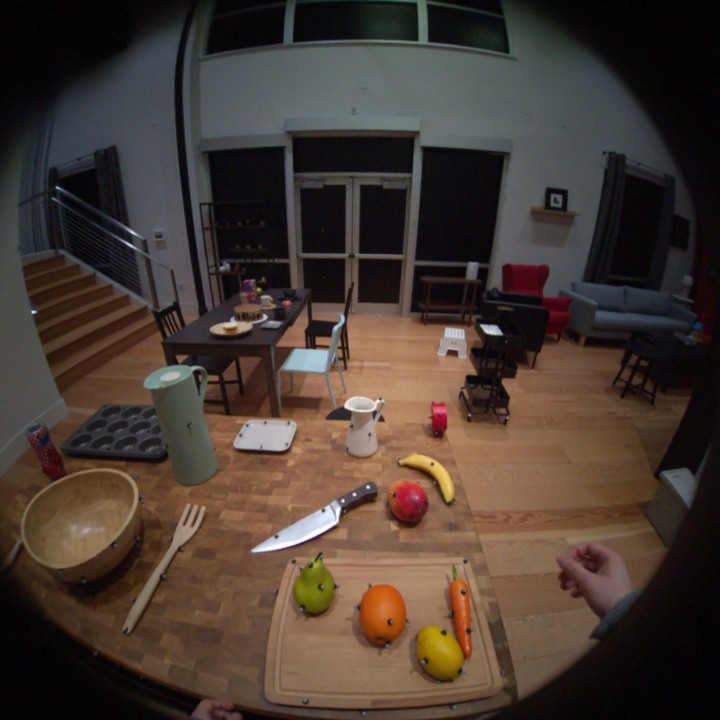
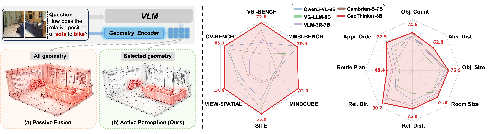
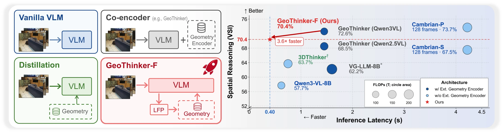
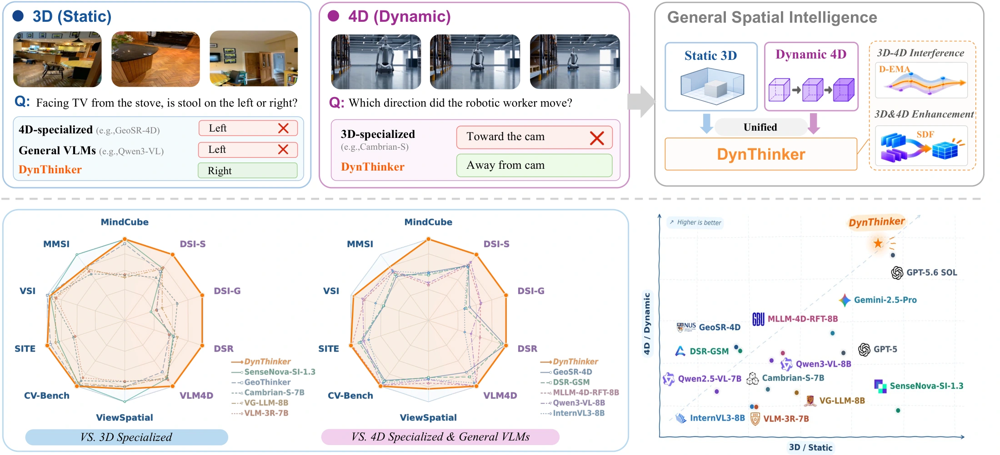

GeoThinker
Semantic-guided geometry

Semantic-guided geometry
Let semantics guide geometry. Make it faster. Extend it to dynamics. Watch the films
Semantic-guided geometry

Semantic-guided geometry
Faster inference
Predict from within
Space + dynamics
Understand space + dynamics
Semantic gating guides geometry fusion inside the VLM.

Predict geometry and temporal features internally for faster inference.

Combine spatial and dynamic features for 3D + 4D reasoning.
